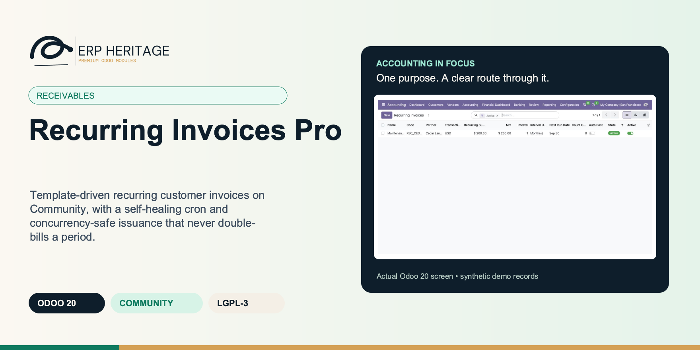
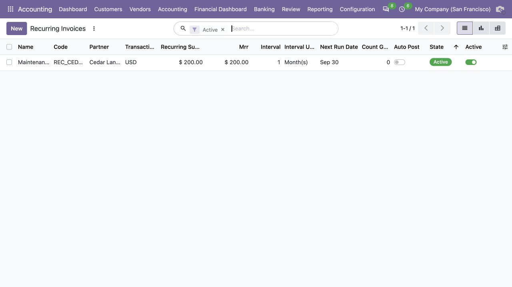
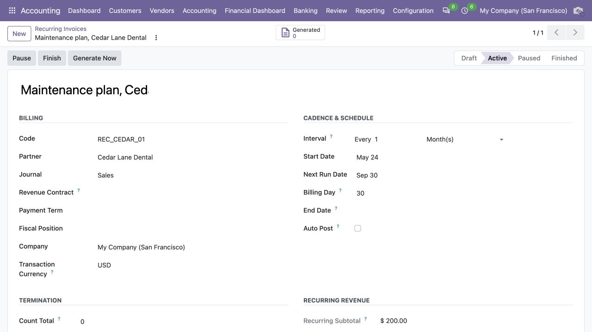
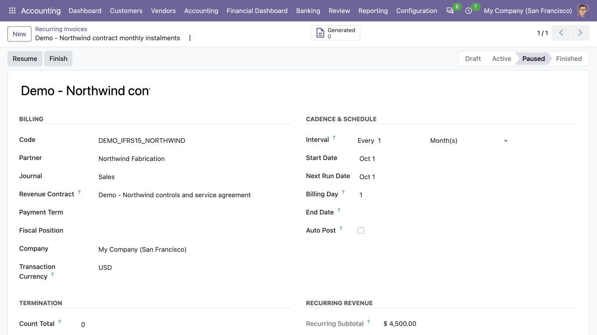

ERP HERITAGE / ODOO 20 COMMUNITY
Template-driven recurring customer invoices on Community, with a self-healing cron and concurrency-safe issuance that never double-bills a period.
LGPL-3 · Odoo 20 · v20.0.1.1.3 · Module guide, setup, workflows and rollout checks
The purpose
Real recurring customer invoices for Odoo 20 Community Edition. Templates, not workarounds. Configure a billing arrangement once, and a daily cron generates invoices on the cadence you set, in draft for review or auto posted for hands-off operation.
Inside Odoo 20
Captured from Odoo 20 Community using synthetic demonstration records. Configuration screens show the available workflow; external service connectivity still requires the relevant provider setup and validation.

Active recurring invoice template shows monthly cadence, next run and recurring amount; none generated yet.
Captured 2026-09-22 from isolated Odoo 20 Community database with synthetic demonstration records. No external submission or live banking activity is represented.

Maintenance template configures the customer, sales journal, billing day and automatic-posting preference.
Captured 2026-09-22 from isolated Odoo 20 Community database with synthetic demonstration records. No external submission or live banking activity is represented.

With the optional revenue bridge installed, a paused template links contract accounting to monthly billing.
Captured 2026-09-22 from isolated Odoo 20 Community database with synthetic demonstration records. No external submission or live banking activity is represented.
Inside this module
An arbitrary N interval over five built-in units (day, week, month, quarter, year). Every 2 weeks, every 6 months, monthly, quarterly, yearly are all settings. Bound the run with an end date or a maximum invoice count, and the template finishes itself.
The daily cron isolates each template in its own savepoint. A generation failure rolls back the partial invoice and counter change, retains the billing period, and pauses the template with recorded error evidence. Resolve the issue and deliberately resume to retry that period; other templates continue.
Output is plain journal entry customer invoice records, so core reconciliation, the customer statement, and every report already understand it. LGPL-3 source on disk, no activation key, no phone-home, no recurring licence.
Manual issuance takes a SELECT FOR UPDATE row lock and invalidates the cache before reading the next-run date, so a double-click or browser retry serialises: the second request issues the NEXT period instead of double-billing the current one.
Generation and schedule advancement share a savepoint. A failure pauses only the affected template; other due templates continue. Resume after reviewing the recorded cause so a failed period is not silently skipped.
A failed generation rolls back the partial invoice and counter change, retains the billing period, and pauses the template with durable error evidence. Deliberate resume retries that period after the problem is resolved.
Proration refuses ambiguous cases instead of guessing: multi-line templates and zero-days-remaining are rejected with explicit UserError remedies rather than producing a wrong credit.
The credit note, the new-price invoice, and the template reprice all commit under one savepoint, so a partial failure cannot leave a credit note without its matching charge.
EH template invoices and proration documents cannot acquire a competing native monthly, quarterly or yearly recurrence or native recurring origin. One-time scheduled posting remains supported. Existing conflicts stop before posting for accountant review; standalone native recurring invoices remain available.
From input to outcome
Set up the template using the agreed customer terms and review the first scheduled date and invoicing interval. Gather billing template, partner, invoice lines, recurrence dates, cadence and posting preference. Use a representative case with a known expected result so the team can separate configuration decisions from unexpected behaviour. Keep the supporting commercial or accounting evidence available during review.
Generate or process due occurrences and inspect the resulting standard invoices before relying on an automated posting choice. Follow the record’s available actions in the order intended by the workflow. Review the selected company, relevant dates and any validation messages before continuing. If the source data changes, reassess the result against the updated evidence.
Twelve monthly retainer templates sit active, each issuing a draft invoice on its own day for review. One client moves to a higher tier mid-month. The clerk opens the proration wizard on that template: in a single savepoint it books a credit note for the unused calendar days, issues a new-price invoice for the remainder, and reprices the template going forward, so a credit can never land without its matching charge. Overnight, the daily cron walks every due template, generates each in its own savepoint, and advances the schedules. One template references a product that was archived, so its generation fails; the cron rolls back that partial draft, still advances its next run, and records the error on the template. The clerk sees the parked template in the morning, fixes the line, and the other eleven invoices are already waiting in draft, untouched.
Review failures, pauses and repricing changes, and confirm that the next billing date matches the intended commercial cycle. Compare the outcome with the expected treatment for this case and record the reason for any difference that requires follow-up. Give exceptions an owner so they do not disappear inside a period-end spreadsheet.
Keep billing ownership separate from revenue recognition; use the dedicated bridge when recurring bills must feed an IFRS 15 contract. Include the accepted operating example, configuration choices and unresolved dependencies in the handover. Review them when business policy, source data or the surrounding Odoo applications change.
Business situations
Recurring Invoices Pro is relevant to subscription billing clerks and finance operators who need to answer this question: Which invoices should be generated next, using which agreed template and cadence? Start with the process that creates the decision, identify its owner and agree what evidence the reviewer needs. A narrow pilot helps the team evaluate the supported workflow using its own accounting data before broadening access.
Use the module’s receivables role as one part of a controlled close. Bring the relevant billing template, partner, invoice lines, recurrence dates, cadence and posting preference to the review, then explain the result alongside the business event it represents. Establish which outputs become part of the reporting pack and which outstanding matters need a separate accounting decision.
Turn the business question into an acceptance case: Which invoices should be generated next, using which agreed template and cadence? Use one ordinary example and one relevant exception from the supported scope below. Ask the intended operator to prepare it and the reviewer to explain the result. Retain that accepted example with the deployment notes so future changes can be assessed against an understood process.
Before the first result
Confirm that the organisation needs the supported receivables process described here. Identify the responsible subscription billing clerks and finance operators and write down the decision they expect the module to support. Use the limitations section to separate shipped behaviour from an integration, professional judgement or operational service that needs another owner.
Prepare billing template, partner, invoice lines, recurrence dates, cadence and posting preference. Check the relevant records in the intended company and use dates that match the business event. Resolve missing accounting configuration before evaluating calculated output; plausible-looking totals do not establish that the chosen inputs or policies are correct.
This module declares Accounting Suite Base as part of its installation foundation. Its direct standard-Odoo dependencies are account. Review the actual dependency set in the target database before a rollout, especially where another addon also extends the same accounting models, menus or posting actions.
Define who operates Recurring Invoices Pro, who reviews unusual results and who maintains configuration. Run the representative workflow below in a test database using the intended users. Confirm that users can reach the work they own and that the reviewer understands the available evidence before moving the process into live operation.
Workflow reference
The cadence engine runs an arbitrary N interval over five built-in units (day, week, month, quarter, year), so every 2 weeks or every 6 months is a setting, not a hack. Bound the schedule with an end date or a maximum invoice count, and the template finishes itself when the limit is reached.
The daily cron isolates every template in its own savepoint. If one template fails, the partial draft is rolled back, its billing period is retained, and the template is paused with durable chatter evidence. After repair and deliberate resume, the same period is retried instead of being silently skipped. Manual issuance takes a SELECT FOR UPDATE row lock before reading and advancing the next-run date, so a double-click or browser retry cannot double-bill the same period; the serialised second request issues the following period instead.
The proration wizard handles mid-cycle price changes as one atomic operation: a credit note, a new-price invoice, and the template reprice all commit under a single savepoint, on a calendar-day pro-rata basis. Ambiguous cases (multi-line templates, zero days remaining) are refused with explicit remedies rather than producing a wrong credit.
Generated invoices are standard journal entry records of type customer invoice, so core Odoo reconciliation, the customer statement, and every downstream report already understand the output. This module adds the recurrence engine, not a parallel invoicing stack.
Configuring a recurrence longer than 12 months (for example interval unit accidentally set to year) raises a soft onchange warning before the schedule is saved.
A finished template cannot be silently reactivated, and a template without lines cannot be activated or generated, so empty or zombie schedules never start issuing.
Template code is validated against a strict identifier pattern and is unique per company, preventing collisions when several companies share the database.
One template per billing arrangement: customer, sale journal, payment term, fiscal position, default ref and narration, with multi-line products, descriptions, per-line income accounts, quantities, unit prices and taxes.
Arbitrary N interval over day, week, month, quarter or year, bounded by an optional end date or maximum invoice count. The template advances itself and finishes when the limit is reached.
Dispatches every active template whose next run is due, each in its own savepoint, with per-template error isolation and self-healing advance so the queue keeps moving even when one template fails.
A lock-safe catch-up button that issues one invoice and advances the schedule under a row lock, so concurrent requests cannot double-bill the same period.
Atomic mid-cycle price change: calendar-day pro-rata credit note, new-price invoice and template reprice in a single savepoint, with explicit guards against ambiguous inputs.
Pause and resume that keeps the cadence intact, draft-by-default with optional per-template auto-post, and readonly counters for total generated, last run timestamp, last generated move and last error.
Day of month used by monthly, quarterly and yearly schedules. It is initialised from Next Run Date, and is restored after a short month clamps a run to its final day.
Set by an upgrade when recurring workflow, counter, service-period, or journal-link evidence predates durable provenance. The record is preserved but all mutations and billing actions remain blocked.
Manager explanation of source records checked and corrective setup required before future billing resumes. Historical quarantined moves are never promoted to verified evidence.
Immutable template/service-period key. It is released only when a draft generation is cancelled or a posted invoice is neutralised through the controlled correction workflow.
Set by an upgrade when recurring invoice/proration linkage predates durable engine provenance. The link is retained for audit, while the move is quarantined and cannot be accepted as current source evidence.
Date the new pricing takes effect. The remaining unused portion of the current period at the old price is credited; the same window at the new price is invoiced.
Illustrative implementation exercise. A customer’s monthly service changes during the billing relationship. Inspect the template’s next date, recurrence and lines before changing the future billing instruction. Review the generated invoice as an ordinary accounting document and confirm whether the configured process prepares drafts or posts automatically. Changes to a template should be distinguished from edits to already issued invoices. Pause and resume a representative template and inspect the next scheduled occurrence. Include a template with incomplete configuration to understand how its failure is recorded without treating the entire queue as successful. Where revenue recognition is in scope, review the separate contract link and deferred treatment rather than equating the billing cadence with earned revenue.
Questions before rollout
It is designed for subscription billing clerks and finance operators. Its central business question is: Which invoices should be generated next, using which agreed template and cadence? The listing describes the shipped operating scope and the decisions that remain with the organisation. Evaluate it against your own records and review process, rather than treating the module name as a promise to cover every scenario in that accounting area.
Have billing template, partner, invoice lines, recurrence dates, cadence and posting preference ready, together with the person who owns the related accounting policy. Set up the template using the agreed customer terms and review the first scheduled date and invoicing interval. A known example makes it possible to check the result and resolve configuration questions before the process is repeated across more records or companies.
Review failures, pauses and repricing changes, and confirm that the next billing date matches the intended commercial cycle. Keep the relevant source evidence with the output and be explicit about company, date and policy choices. The most useful review asks whether the result follows from the business inputs, not only whether the operation completed without a validation message.
It belongs to the receivables family. Its declared custom dependency foundation is Accounting Suite Base. Installing the complete suite also brings other operating and specialist modules; using this focused module should be evaluated against its own dependency list and scope. Optional services still need their own configuration and agreement where applicable.
Each template has an explicit transaction currency. Generated invoices use it, while subtotal, MRR and ARR are also converted to company currency at the next billing date for comparable reporting. Keep billing ownership separate from revenue recognition; use the dedicated bridge when recurring bills must feed an IFRS 15 contract.
No. Recurring Invoices Pro provides the specific records, calculations or workflow described in this listing. The organisation remains responsible for its source information, accounting choices, supporting evidence and review. Where the process uses an estimate, a contract assessment or an external service, appoint the appropriate owner before relying on the output.
Scope and requirements
Each template has an explicit transaction currency. Generated invoices use it, while subtotal, MRR and ARR are also converted to company currency at the next billing date for comparable reporting.
This module does not email or send the generated invoice. It creates the journal entry and only optionally posts it when auto-post is set; delivery is left to your standard Odoo flows.
Customer statements and portal behaviour remain standard Odoo. Proration additionally links its credit to the billed source and reconciles the eligible receivable lines atomically.
Generated service periods have a durable idempotency key. Posted mistakes use a manager-only linked sealed correction; neither the source nor its ledger lines are unlocked or deleted.
Multi-company queues run in deterministic bounded batches with per-template progress commits, failure isolation and retained-period retry.
Standards references describe the accounting subject addressed by the module. They do not establish certification, statutory filing acceptance or suitability for every jurisdiction. Your finance team owns its assumptions, accounting policies and review.
Installation scope
Odoo installs the following direct dependencies automatically. Additional dependencies can be brought in by those modules. Related modules in the wider catalogue are optional unless they appear in this dependency chain.
Shared reporting engine for the ERP Heritage Odoo 20 Community accounting suite, providing a reproducible report-execution audit log and a move-version result cache. Append-only audit log of every report render with user, timestamp, the full options snapshot, runtime, and a SHA-256 result hash for XLSX and PDF output, plus a multi-company analytic-aware parameterised SQL builder with no raw user input in SQL, a three-tier User/Manager/read-only Auditor privilege model, and a currency-aware XLSX writer. Odoo 20 Community accounting reporting engine, reproducible financial report audit trail, move-version report cache invalidation, multi-company parameterised SQL builder, append-only audit log, read-only auditor role, SHA-256 report hash compliance, currency-aware XLSX export, analytic-aware journal item aggregation.
Included dependency: eh_account_base. The shared reporting engine under the ERP Heritage accounting modules: an append-only render audit log, precise per-company cache invalidation, and a whitelist-only parameterised SQL builder.
Odoo Community dependency required by this module. Its own dependencies and configuration remain part of the installation scope.
Acceptance guide
The following are recommended rollout checks, not claims of additional built-in features. Apply the checks relevant to this module and retain evidence of your own results.
Select a recent, closed period that your finance team understands well. Keep its approved source documents, ledger totals and existing working papers available. Reproduce that period in a staging database before working on current transactions. A familiar period makes differences visible: you can distinguish an opening balance problem from a configuration choice, a timing difference or a genuine defect. Agree which person owns each discrepancy and what evidence will close it. Successful installation is the starting point; a repeatable business outcome is the acceptance criterion.
Write down the output your team needs from this module: a reviewed transaction, an exported file, a reconciled balance, an approved schedule or an operational queue. Identify who prepares it, who reviews it and who relies on it next. Make the scope concrete with one company, one reporting period and a small representative document set. Include an ordinary case and an exception. This keeps the evaluation focused on the business decision instead of the number of available screens, and gives reviewers a consistent way to compare the new workflow with their current process.
Use the Odoo 20 edition of the module and its dependencies together. The manifest defines what Odoo installs automatically; a feature mentioned elsewhere in the wider product family is not automatically included. Review the dependency guide on this page before enabling the complete suite, especially where your deployment also uses Sales, Purchase, Inventory or website components. Confirm that your hosting arrangement accepts custom server modules and their Python requirements. Keep a copy of the installed module versions with your acceptance record so a later update can be checked against the same baseline.
Check the companies, currencies, fiscal periods, journals, accounts and partner records used by your sample. Confirm that account purposes agree with your chart of accounts and that archived records are not being selected inadvertently. Review company-specific settings while the intended company is active. Where a workflow needs bank details, analytic dimensions, product information or payment terms, validate those inputs with their owner. Clean master data reduces repeated exceptions and makes it easier to investigate the exceptions that remain. Keep the preparation list short enough for someone else to repeat it.
Decide which source establishes the opening position before introducing new transactions. Save the source date, company, currency and supporting reconciliation. If a module maintains a schedule or a working-paper balance alongside the ledger, document how that opening amount should tie to the general ledger. Do not use balancing entries to hide a difference during the pilot. Classify the difference, correct its source and rerun the comparison. The resulting trail is useful both for your internal reviewer and for support if an unexpected calculation needs investigation.
Choose named users for preparation, review and administration. Confirm their practical access by signing in as those users in staging, rather than relying on an administrator's view of the menus. A visible menu does not replace model access or record restrictions, and a hidden menu does not by itself prove that data is protected. For your own acceptance check, verify the specific business operations each role needs. If your organization requires separation of duties, include that policy in the rollout criteria and check the actual workflow against it before granting production access.
Run the sample with the intended company selected, then repeat the relevant navigation and search checks as a user assigned to a different company. Record which company owns each source document and each generated result. For users who work across entities, confirm how their allowed-company selection affects totals and available records. Investigate any cross-company difference before it becomes a month-end problem. Group-level work and company-level work have different scopes; use the appropriate module and document the scope on the review evidence instead of assuming one screen represents both.
Include a company-currency case and, where relevant to the module, a foreign-currency case. Check the date used to select exchange rates and keep the rate source available to the reviewer. Add a transaction near a period boundary so the team can see whether document date, accounting date or another business date drives the result. Test decimal precision with a small amount as well as a large one. Record the expected rounding treatment. These checks turn vague differences in totals into questions that can be resolved against your accounting policy.
Choose one result and follow the available links or record references back to the original business document. Compare its company, partner, amount, currency and dates with the expected source. Where the workflow creates a journal entry, inspect the accounts and balancing lines before relying on an aggregate report. Where it exports a file, compare the file's records with the selected batch. Save a small, intelligible evidence set instead of an indiscriminate screenshot archive. A reviewer should be able to explain what happened without needing the original preparer beside them.
If this module creates or updates accounting entries, separate preparation from the decision to post in your operating procedure. Inspect the proposed outcome, resolve missing configuration and confirm the intended period before using a posting action. If the module does not post entries, identify the equivalent commitment point, such as sending a file or approving a review record. Record who is allowed to make that decision. The page describes the module's supported workflow; your team still needs an operating policy that fits its accounting responsibilities and approval structure.
From pilot to production
Use a deliberately incomplete sample in staging: a missing required setting, an unsuitable date or a source document that is not ready for the next step. Observe the actual message and the record state that remains. Correct the input and repeat the operation. Check that the recovered result agrees with the ordinary successful case. For transactions already committed, use the supported correction or reversal workflow rather than editing database records. Your acceptance record should explain how staff recover from mistakes, because that is part of day-to-day usability, not an unusual administrative task.
Repeat an import, calculation, preparation step or button action only where the documented workflow permits it. Confirm whether the expected behavior is a recalculation, a refusal, a new version or reuse of an existing record. Do not infer universal duplicate prevention from one successful test. Record the behavior of the actual operation your team will use and include it in staff guidance. A small, identifiable sample makes duplicate records easy to spot and avoids creating a misleading acceptance result from a large batch with poorly understood contents.
Where accounting dates are involved, inspect your company's lock settings and the role that can change them. Include one sample dated inside a closed period and one in the open period, then observe the supported behavior with normal finance access. Agree how the team will handle late documents and approved corrections. The goal is a clear route for legitimate work that preserves the reason the period was closed. Record the policy alongside the module's workflow so operators know when to stop and involve the person responsible for the close.
If the module produces reports or exchange files, have the intended recipient inspect a sample. For a finance report, check the filters, company, dates, currency, labels and totals. For a bank or service file, use that recipient's own validation or test process before a production submission. Generating a structurally valid file does not establish acceptance by every provider. Keep the exact sample and any recipient feedback with the rollout record. Where no export is provided, agree which supported screen or linked record serves as the handover evidence.
Identify any step that depends on a separately configured provider, connector, credential or commercial service. Confirm the exact adapter and its requirements before scheduling a live demonstration. Some family modules provide deterministic rules or file preparation without a live external connection; their usefulness should be evaluated on that basis. Test a provider failure in staging only when the adapter offers a safe test route. Make it clear who manages credentials and provider subscriptions, and who should be contacted when an external service is unavailable.
Time the operations your staff will actually repeat, using a dataset that resembles your expected company, date range and document volume. Record the environment and sample size beside the timings. Include navigation, filtering, preparation and review rather than quoting a single best-case page load. This page makes no universal performance promise: network latency, database size, customizations and infrastructure affect results. Use measurements to choose a practical rollout batch size and to identify any operation that needs investigation before more users join the workflow.
Give staff a short exercise that begins with a business situation and ends with a reviewed result. Include the expected amount or state, the navigation route, the point at which a reviewer becomes involved and the supported correction route. Let operators explain why their result is correct. Add only the settings and exceptions relevant to their role. A concise internal playbook built from your own pilot is easier to maintain than a large collection of unannotated screenshots, and it helps new users understand the relationship between this module and the rest of Accounting.
Capture the module version, Odoo version, affected company, operation, exact message and a minimal sequence of steps. Use redacted sample documents when sharing evidence outside your organization. State the expected result and the actual result separately. Include the date filters and role used, because the same record can look different with another scope or set of permissions. Never include passwords, API tokens or private keys in a support message. Good reproduction details allow the problem to be investigated without guessing at your business setup or asking staff to repeat a full close.
Before deploying an update, back up the database and filestore together, and restore that backup into an isolated environment. Apply the module update there, then repeat the key pilot scenarios using the saved acceptance record. Check that existing documents remain readable and that the expected actions and menus still lead to the right workflow. Include one newly created record as well as an older one. Keep a rollback plan appropriate to your deployment and confirm that the backup can be restored before scheduling the production change.
Agree the release criteria before the pilot ends: expected financial results, access boundaries, supported corrections, output acceptance and owner sign-off. List unresolved items with their business impact instead of treating every observation as a blocker or dismissing it as cosmetic. Start production with a manageable scope and a named reviewer. Keep the first cycle's evidence so that later enhancements can be assessed against a concrete baseline. App-store descriptions help you select and understand the module; acceptance in your own configuration establishes whether the workflow is ready for your team.
Connected capabilities
These related modules explain how this workflow connects to the wider accounting process. Only the dependencies declared above are installed automatically. Choose optional additions for a specific business need.
The shared engine that powers the ERP Heritage accounting modules for Odoo 20 Community. It auto-installs as a dependency of any ERP Heritage accounting module, so you do not need to install it by hand.
Collections Workbench turns the aged receivable report from a passive dashboard into an active workflow. A single GROUP BY SQL pass over open receivable lines applies each company grace period and creates one collections case per overdue commercial customer per company, idempotently, so the nightly cron updates totals rather than duplicating cases. A canonical partial EXCLUDE constraint enforces only one open case across every contact of the commercial customer, with each row isolated by a savepoint when concurrent workers race. Each case surfaces the total overdue, oldest due date, and days overdue across a seven column kanban: New, Contacted, Promise to Pay, Escalated, Disputed, Resolved, Written Off. A configurable per company follow up ladder fires on the shipped defaults of 7, 30, 60, and 90 days overdue, selecting the highest currently applicable unsent step. Each level sends a branded HTML dunning email or schedules its configured activity, advanced by a savepoint isolated daily cron so one delivery failure does not halt the queue. Promises to pay are captured as an amount plus a date on one immutable action row, and when that promise lapses a bounded broken promise cron escalates it once by recording the exact promise action identity. Every collections action is written to an append only action log that is blocked from create, edit, and delete in the user interface and from write and unlink at the model level. A late fee wizard charges a flat or prorated percent per month fee computed in Decimal to the cent, revalidates the live ledger at issuance, posts a standard customer invoice, and records invoice linked evidence under a database unique issuance fingerprint so the same exposure, policy, and issue date cannot be charged twice. A per case Statement of Account PDF listing open invoices and action history renders through the shared suite brand header and footer for print, download, or attachment.
Use the same company-dependent customer credit amount throughout native Odoo and EH credit controls. This module adds a warn-or-block invoice-posting policy to that shared amount, combines customer exposure across the authorised accounting-branch scope, and records manager exceptions. The company default is shared by all enforcement policies. Upgrades preserve former EH terms and require a deliberate manager decision where native and EH amounts conflict.
Customer Portal Extra turns the standard Odoo 20 Community customer portal into a self-service accounts receivable corner. It adds two things and does them carefully.
ERP Heritage Community Accounting Pro installs a fixed collection of 50 direct accounting dependencies. Together with the suite itself and the transitive EH EDI Core foundation, its custom-module closure contains 52 modules. The collection brings reporting, reconciliation, payments, receivables, approvals, specialist accounting, group work and close controls into one Community installation. Its value comes from connecting those processes and their evidence; adoption still requires deliberate company configuration, accounting ownership and review. Australian BAS is available separately and installs the suite as its accounting foundation.
Plan the surrounding workflow
The following playbooks explain adjacent work in named companion modules. They are included here to help you plan the handoff around this module. Each companion is labelled as an installed dependency or an optional addition. These capabilities belong to that named companion, not to the standalone module you are reading about.
Optional companion; requires separate installation
Link a recurring invoice template to an IFRS 15 revenue contract, and every generated invoice lands as deferred revenue on the balance sheet instead of immediate income, released to revenue by the contract's recognition run.
A linked template routes every generated invoice line to the contract's contract liability account instead of the line income account, so recurring billing shows as deferred revenue on the balance sheet, not immediate income, and the recognition run releases it as performance obligations are satisfied.
On posting, the invoice registers itself as billing on the contract. If the contract carries a contract asset (revenue recognised ahead of billing), a balanced reclassification clears that asset first, so the ledger shows exactly the split the contract's own Record Billing convention would have produced.
The link is optional per template. Unlinked templates are untouched and post to income exactly as before, a byte-identical default, so adding the bridge does not disturb any billing already running.
Registration is idempotent per invoice: a visible status records that a generated invoice has already registered its billing, and a registered invoice cannot be reset and reposted to count the same billing twice.
Generation validates the active contract, journal, contract asset, contract liability, receivable, company and invoice currency before it creates the linked invoice, with a clear repair message.
An authorised invoicer may post a manager-created linked draft without broad revenue-contract rights. The server first checks invoice write access, then revalidates immutable template, contract, currency, account and seal evidence before updating only the billing anchor.
A constraint requires the linked revenue contract to belong to the template's company, and the generated invoice's actual currency is verified against that contract before posting.
A Revenue Contract field on the recurring invoice template, filtered to the template's company, with a same-company constraint.
Review this companion’s own setup and scope before connecting the workflows. Keep the company, reporting date and business document references consistent at the handoff.
Optional companion; requires separate installation
Run the full IFRS 15 five-step model in Odoo 20 Community, from contract and performance obligations through transaction price allocation to balanced revenue and billing journals.
A contract, its performance obligations and their standalone selling prices drive an allocation of the transaction price (IFRS 15.74). Recognition posts the incremental amount since the last run, crediting revenue and clearing the contract liability first, then the contract asset (IFRS 15.105-107). Every entry balances by construction.
Billing debits the receivable and credits the contract asset first, then the contract liability, while recognition works the other way. The two mechanics keep the net contract position, cumulative recognised less cumulative billed, correct on the balance sheet at all times (IFRS 15.106-107).
Opt-in per contract: constrain variable consideration to the highly probable amount (IFRS 15.50-59), allocate a bundle discount to the obligation it relates to (IFRS 15.81-83), discount a financing component with advance or arrears interest (IFRS 15.60-65), and apply separate, prospective or catch-up modifications (IFRS 15.18-21).
Recognising against a contract that was billed ahead of performance clears the contract liability first and only then builds the contract asset, so a prepaid contract never shows a phantom asset (IFRS 15.105-107).
A reduced percentage of completion or a de-satisfied point-in-time obligation drops the target below what is posted; recognition then posts a balanced reversing entry, debiting revenue and crediting the asset then the liability, rather than leaving revenue overstated.
Once revenue has posted, the standalone selling price, satisfaction method, accounts, journal and transaction price are locked; re-basing them would silently restate posted revenue with no matching entry. Progress levers stay editable because they flow through a balanced recognition run.
Adding or removing an obligation on a contract with posted revenue is refused outside a sanctioned modification; the modification wizard reallocates the remaining price prospectively, trues up under catch-up, or spins off a separate contract, and records which treatment was applied (IFRS 15.18-21).
A contract with no obligations, a zero total standalone selling price, a missing revenue, contract-asset, contract-liability, receivable, interest account or journal, or an over-recognition beyond the allocated price each raises an explicit message instead of posting a wrong or unbalanced entry.
Review this companion’s own setup and scope before connecting the workflows. Keep the company, reporting date and business document references consistent at the handoff.
Optional companion; requires separate installation
Turn the aged receivable report into an active dunning workflow that creates, chases, and escalates a case per overdue customer on its own.
One GROUP BY SQL pass builds a case per overdue customer from open AR and refreshes it nightly. The follow up cron picks the next due level per case and sends it, so the queue moves whether or not a collector logs in.
Every call, email, follow up, and broken promise escalation writes a row to an action log that blocks write and unlink at the model level. Auto creation is idempotent and de duplicated by a partial EXCLUDE constraint, so re running the cron never doubles a case.
LGPL-3 source on disk. No activation key, no phone home, no recurring licence. Configure the ladder per company, swap in your own templates, and extend the workflow. Free today, free at renewal, because there is no renewal.
The nightly aging refresh zeroes the total on cases whose partner paid down their balance, so a customer who drops out of the overdue aggregation never lingers with a stale figure until someone clicks Refresh.
A resolved case is never reopened. A new overdue invoice spins up a fresh case so the resolution history stays intact. The EXCLUDE constraint only forbids two open cases for the same commercial customer, not a closed one plus a new one.
Broken promise escalation is idempotent. The cron records the exact immutable promise action it handled, so time passing can never re escalate the same commitment while a newer promise remains independently eligible.
Follow up counters increment with an atomic SQL UPDATE then a cache invalidation, so a manual send and the scheduled cron hitting the same case at once cannot clobber each other with a read modify write race.
The late fee wizard computes flat or prorated percent per month fees in Decimal with ROUND_HALF_UP, revalidates the live ledger at issuance, and records the invoice under a database unique issuance fingerprint so the same exposure, policy, and issue date cannot be charged twice.
Review this companion’s own setup and scope before connecting the workflows. Keep the company, reporting date and business document references consistent at the handoff.
Optional companion; requires separate installation
PAIN.008 with reachable FRST / RCUR / FNAL / OOFF lifecycle, CORE/B2B controls, XSD-tested output, and atomic consume-for-collection.
Targets the published namespace and validates generated output against the official PAIN.008.001.02 XSD in the cross-version gate.
On collection the mandate consume bumps the FRST to RCUR counter via SQL UPDATE so concurrent collections cannot lose an increment.
The collection path and cron expire both used and never-collected mandates after 36 months from the controlling date.
IBAN, agent, and debtor-name amendments write append-only evidence and render once under current EPC placement rules.
A live file blocks a second cut; controlled void and re-cut reuse immutable payment sequence/amendment evidence.
Withdrawn COR1 is unavailable. B2B requires a business debtor plus recorded bank confirmation.
Review this companion’s own setup and scope before connecting the workflows. Keep the company, reporting date and business document references consistent at the handoff.
ERP Heritage
Start with the workflow, setup and acceptance guide above. For implementation or support, share your Odoo version, module version, business scenario and a redacted example. Keep credentials and personal data out of support messages.
Published by ERP Heritage. Odoo is a trademark of Odoo S.A.; this independently developed application is not an Odoo S.A. product or endorsement.
Package: eh_account_recurring_invoices · Release: v20.0.1.1.3 · License: LGPL-3.